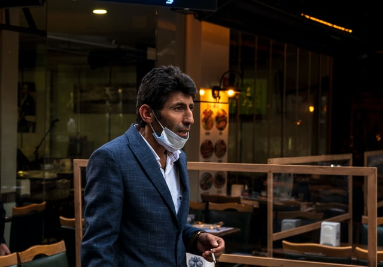

Technology and Society
Our field of study is computer science, and one of our courses this semester is called Technology and Society. The course can be defined as:
«This course will provide a fundamental understanding of our digital world. It gives an overview of how technology affects our lives and the way we work, as well as our social structures, work patterns and individual preferences contributing to shaping technology. information and different aspects on how technology and society.»
One of the given obligatory assignments inspired us to talk about the topic of tracking. The Norwegian app Smittestopp came up in discussion. More specifically we started talking about our own experience with this application.
Smittestopp is an app meant to limit the spread of coronavirus in Norway. The app uses Bluetooth technology to share “ID-keys” among phones that are near each other. These keys are used to notify users of the app if they have been in contact with a user infected with coronavirus (Norwegian Institute of Public Health, 2021) (Helsenorge )
There has been some controversy about the app because the first version was launched with a low regard to privacy and security. In a article from NRK, lawyer and expert in privacy Jon Wessel-Aas said “I would not really recommend anyone to use the app as it is now. Unfortunately”.
As it turns out most of us still didn’t use the app. We asked ourselves why and it seems, for most of the group members the app still had some negative connotations. We concluded this is probably because of the large amount of critique Read the article about the critique the first version of the app received. After public outcry a second version was launched in which these issues were resolved. This second version was even launched with an open-source codebase. Go to article about the new app